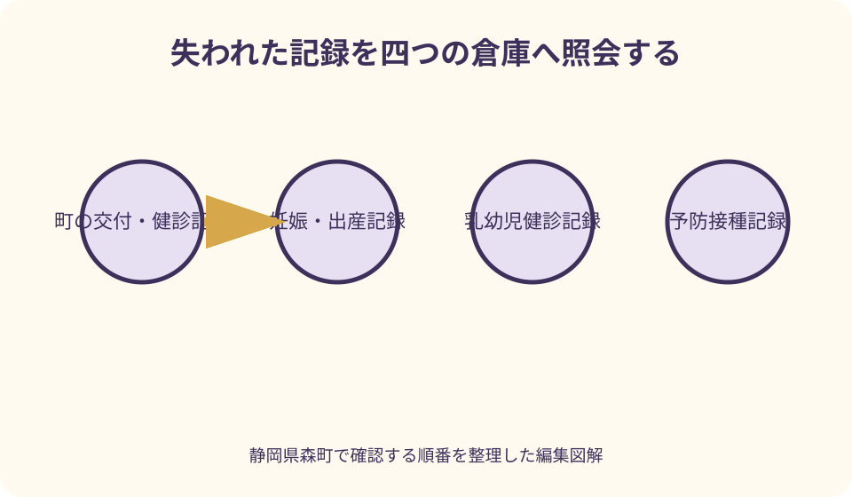
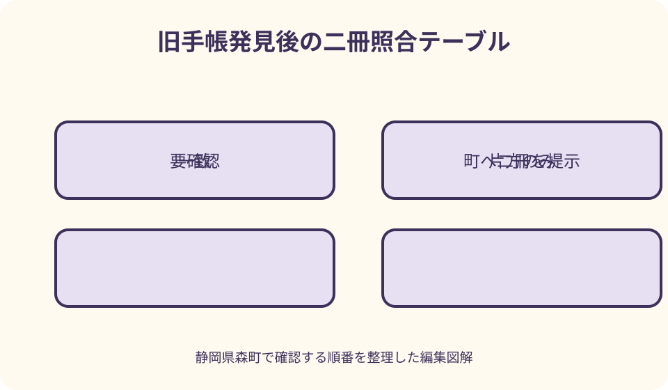

妊娠・子育て手続｜最終確認 2026-08-10
静岡県森町で母子健康手帳を紛失｜再交付と健診・予防接種記録の確認
母子健康手帳をなくしたときは、探す作業と再交付相談を並行して進めます。森町は紛失時の再交付を受け付けていますが、新しい手帳へ過去の健診・出産・予防接種記録が自動的にすべて戻るとは限りません。いつ、どこで受診・接種したかを一覧にし、森町、医療機関、転入前自治体へ、それぞれ保有する記録と証明方法を確認します。受診や予防接種が近い場合は、手帳がないまま自己判断せず予約先へ先に連絡してください。

編集イラスト最初に結論：探索・再交付・記録照会を三本で進める
母子健康手帳の紛失に気付いたら、家中を探し終わるまで町への相談を待つ必要はありません。探索、再交付の確認、近い受診・接種への連絡を同時に始めます。
森町公式は、母子健康手帳をなくした場合の再交付を受け付けると明記しています。相談先は森町保健福祉センター内の健康こども課こども家庭係です。
再交付は新しい冊子を受け取る手続であり、過去の記載が自動ですべて復元されるという意味ではありません。行政、医療機関、家庭の控えを照合する別作業が必要です。
旧手帳が後で見つかる可能性も考え、再交付日、照会先、転記した根拠を記録します。二冊の内容が食い違ったときに、どちらが元記録か追えるようにします。
最初の30分で探す場所を決める
最後に手帳を使った日を、妊婦健診、乳幼児健診、予防接種、出生届、入園書類などから思い出します。曖昧でも候補日を三つまで書きます。
自宅では母子用品のバッグ、書類箱、車、ベビーカー、上着、コピー機周辺を順番に確認します。同じ場所を家族が重ねて探さないよう担当を分けます。
医療機関、薬局、保健福祉センター、保育施設へ預けた可能性があるなら、落とし物として届いていないか連絡します。手帳の氏名等を電話で伝える前に相手先を確認します。
屋外で落とした可能性があれば、利用した施設や交通機関、警察の遺失物窓口も候補です。個人情報が含まれるため、見つかった際の連絡先を残します。
紛失と汚損を分けて町へ伝える
完全に所在不明なら紛失、水濡れや破れで一部を読めないなら汚損として状況を説明します。汚損した冊子は捨てず、読める記録を保ったまま町へ持参します。
厚生労働省の取扱要領は、やむを得ない紛失・汚損等の事実を確認し、市町村が再交付その他の適切な処置を講ずるとしています。
表紙だけ破れた、記録欄の一部だけ汚れた場合に再交付が必要かは町が判断します。家庭でページを切り取り、新しいノートへ貼り替えないようにします。
再交付の申出では、なくした時期、交付を受けた自治体、現在の住所、妊娠中か子どもの年齢、近い受診予定を伝えます。
再交付の相談先と受付確認
森町の相談先は健康こども課こども家庭係で、電話番号は0538-86-6330です。所在地は森町森50番地の1、森町保健福祉センター内です。
母子健康手帳の通常交付は平日午前8時30分から午後4時30分と案内されていますが、再交付も同じ受付か、予約が必要かを来庁前に確認します。
本人が行けない場合は、家族による相談や代理受領が可能か、委任状等が必要かを尋ねます。通常交付の持ち物を再交付へそのまま当てはめません。
電話では『母子健康手帳の紛失による再交付』と最初に伝え、妊娠中か、子どもの手帳かを説明します。受診日が迫る場合は日付も伝えます。
本人確認と対象者情報を準備する
再交付で必要な本人確認書類は、申請者、妊産婦、子ども、代理人の関係によって変わり得ます。運転免許証やマイナンバーカード等のどれを求めるか町へ確認します。
子どもの氏名、生年月日、住所、保護者氏名、最初の手帳を交付した自治体をメモします。転入歴がある家庭は、転入前の市区町村名も書きます。
交付番号を覚えていなくても相談を止めません。古い健診通知、受診票、手帳の表紙写真などに番号が残っていないか確認します。
個人番号や医療記録の画像を家族の公開チャットへ送らないようにします。代理人へ渡す資料も封筒に入れ、町が必要とした範囲に限定します。
再交付された手帳は空欄を勝手に埋めない
新しい手帳を受け取ったら、表紙、交付日、氏名等を確認し、どの欄を町が記入するか説明を受けます。再交付であることの記載方法も聞きます。
記憶だけで健診日、検査結果、予防接種の製造番号を埋めると、後の医療判断に使いにくい記録になります。根拠資料のない項目を事実として書きません。
家庭の思い出や発達時期を保護者記録欄へ戻す場合も、当時の記録か後日の回想か分かるようにします。医療者記入欄へ家庭で書き込みません。
町や医療機関が転記するのか、証明書を別紙で保管するのかは記録ごとに異なります。再交付時に照会先と記録方法を確認します。

妊婦健診記録を照会する
妊娠中の手帳をなくした場合は、現在通う産科へすぐ連絡します。次回受診時に再交付手帳を持参すること、過去の健診情報をどう確認するかを尋ねます。
複数の医療機関で受診した、転院した場合は、施設ごとに受診期間を一覧にします。紹介状や検査結果、領収書、予約票も記録の手掛かりです。
医療機関の診療録に情報が残っていても、母子健康手帳へ全項目を転記できるとは限りません。証明書の発行可否、費用、所要日数を確認します。
次回健診が迫っているなら、手帳がないことを理由に自己判断で延期しません。再交付中であることを伝え、受診時の持ち物を産科へ確認します。
出産時の記録を確認する
出産日時、妊娠週数、分娩経過、出生時の子どもの計測等は、出産施設へ照会する候補です。退院時の書類や出生証明書の控えも探します。
出産施設へは、本人確認方法、記録開示や証明書の申込み、手帳への記入可否を尋ねます。電話だけで医療情報を答えられない場合があります。
家庭の記憶と医療機関の記録が違う場合は、自分で数値を選びません。どの資料を正式な確認根拠とするか町・医療機関へ相談します。
出産施設が閉院・統合している場合は、記録の承継先があるか関係機関へ確認します。必ず復元できるとは言えないため、分かった範囲と不明項目を明確にします。
乳幼児健診の記録を確認する
1か月、4か月、10か月児健診を医療機関で受けた場合は、受診先と日付を整理します。森町の1歳6か月・3歳児健診など町実施分は健康こども課へ尋ねます。
健診結果通知、身体計測メモ、子どもノート、医療機関の領収書は受診日の裏付けになります。写真データも撮影日と内容を確認します。
町や医療機関が保有する記録の項目と保存期間は同じとは限りません。身長・体重だけ、所見の概要など、確認できる範囲を具体的に聞きます。
結果が不明なままでも、今後の健診で過去記録を推測して埋めません。『手帳紛失のため未確認』と伝え、現在の診察と相談に必要な情報を提供します。
予防接種記録は接種先と自治体を分けて照会する
予防接種記録には、ワクチン名、接種日、回数、接種医療機関、ロット番号などがあります。記憶だけで回数や日付を決めず、記録の所在を探します。
森町で定期接種を受けた分は、健康こども課へ町が確認できる記録と証明方法を尋ねます。他自治体で接種した分は、接種時に住民登録があった自治体にも照会します。
医療機関が交付した接種済証、予診票の控え、領収書、アプリの履歴も候補です。ただしアプリ表示だけを正式証明として使えるかは提出先へ確認します。
任意接種や海外接種は、森町の記録に含まれない可能性があります。接種した医療機関や国の書類を示し、次の接種計画は医師と町へ確認します。
予防接種を急いで重ねない
手帳がないため接種歴が分からないとき、未接種だと思ってすぐ追加接種を予約しません。重複接種や回数不足を避けるため、町と医療機関へ相談します。
森町は転入者について、転入前の接種歴を確認した後、未接種分の予診票を渡すと案内しています。紛失時も確認できる資料を集める考え方が重要です。
次の接種期限が近い場合は、その期限と確認中の記録を町へ伝えます。記録がそろうまで何を優先するかは医師・町の案内を受けます。
接種間隔や必要回数を一般的な一覧だけで自己計算しません。ワクチンの種類、過去の回数、年齢、個別状況により確認が必要です。
受診票・予診票・別冊も同時に確認する
母子健康手帳を入れていた袋には、妊婦健診受診票、産婦健診受診票、乳幼児健診・相談つづり、予防接種のしおりが一緒に入っていた可能性があります。
これらは母子健康手帳とは別の公費負担・問診書類で、手帳再交付だけでは自動的に再発行されない場合があります。なくした物を一つずつ町へ伝えます。
予約日が近い受診票・予診票を優先して確認し、再交付方法と受診先への連絡を決めます。コピーで使えると自己判断しないようにします。
汚損した書類は読める部分を残して持参します。町が確認する前に破棄したり、内容を新しい用紙へ自分で移したりしません。
転入歴がある場合の照会順
母子健康手帳を交付した自治体と、現在住む森町が違う場合でも、再交付の相談は現在の居住地である森町へ行います。交付自治体名を伝えます。
予防接種や集団健診の行政記録は、実施時に住民登録があった自治体へ照会する必要がある場合があります。転入年月と自治体名を時系列にします。
母子健康手帳自体は転居後も同じ冊子を使う仕組みですが、受診票や予診票は自治体ごとに異なります。なくした書類の種類を混同しません。
前自治体へ依頼する証明の名称、本人確認、手数料、郵送可否は相手自治体へ確認します。森町がすべてを代理取得するとは限りません。
妊娠中・受診直前に紛失した場合
妊娠中の健診日が近い場合は、森町への再交付相談と同時に産科へ連絡します。手帳なしで受診する際に必要な資料を確認します。
お薬手帳、検査結果、紹介状、診察券など、母子健康手帳とは別に医療機関が求める物を準備します。手帳の代用になるとは限りません。
健診時期や症状の相談を、再交付完了まで先送りしません。受診の必要性は医療機関、手帳と受診票の手続は町へ分けます。
外出中に手帳をなくした可能性がある場合、個人情報流出の心配も町へ伝えます。警察への届出番号を控え、見つかった場合の連絡方法を決めます。
保育園・学校・海外渡航で記録が必要な場合
入園・入学書類で予防接種歴や健診歴を求められた場合、記憶から空欄を埋めず、手帳を再交付・照会中であることを提出先へ伝えます。
提出先が必要とするのが手帳の写し、自治体の証明、医療機関の証明のどれかを確認します。必要以上の医療情報を渡さないようにします。
海外渡航や転居で期限がある場合は、照会先へ使用目的と期限を伝えます。発行可能な言語や書式、所要日数を確認します。
すべての過去記録が間に合わない場合は、現在確認できた資料と未確認一覧を分けて提出先へ相談します。家庭で証明書を作らないでください。
旧手帳が見つかったら二冊を自己流で統合しない
再交付後に旧手帳が見つかったら、まず健康こども課へ連絡します。旧手帳と再交付手帳の両方を持参するか、どちらを今後使うか案内を受けます。
新しい手帳に記載された健診・接種と、旧手帳の記録を比べます。重複、日付の違い、転記元が不明な項目へ印を付けます。
旧手帳のページを切り取って新しい手帳へ貼る、数値を書き写して旧冊子を捨てるなどは、町へ確認する前に行いません。
記念として保管できるか、行政上返却が必要かは森町の指示を確認します。二冊を医療機関へ交互に出すと記録が分散するため、主に使う一冊を明確にします。

デジタル控えは補助として使う
母子健康手帳の各ページを撮影していた場合は、撮影日と原本の状態を確認します。画像は照会の手掛かりになりますが、正式な記録として扱えるかは提出先が判断します。
アプリの健診・予防接種履歴も同様です。入力者が家庭か自治体連携か、更新日時、元資料が何かを確認します。
クラウド保存では、氏名、生年月日、医療情報が含まれることを意識します。共有範囲、端末ロック、バックアップ先を見直します。
今後は新しい記録を受け取った日に、必要なページだけ安全な場所へ控えます。紙の手帳とデジタル控えのどちらか一方へ全面的に依存しません。
再交付を受けられる良い点
良い点は、手帳をなくしても森町に再交付の相談窓口があり、今後の健診や予防接種の記録を再び一冊へ集められることです。
紛失を機に受診先、接種先、転入歴を整理すると、家族も医療・行政情報の所在を把握できます。緊急時の説明にも役立ちます。
記録を照会する過程で、次の健診や接種予定を町と確認できます。過去の空欄だけを見るのではなく、これからの記録を切らさない準備になります。
汚損した手帳も、読める部分を残して相談すれば根拠資料になります。完璧な復元だけを目標にせず、確認済みと未確認を区別することに価値があります。
町の案内へ注文したい点
注文したい点は、森町公式が再交付を受け付けると案内する一方、再交付の持ち物、受付時間、代理申請、所要時間を専用ページで示していないことです。
妊娠中、乳幼児期、学齢期、転入者に分け、どの記録を町・医療機関・前自治体へ照会するか一覧があると実用的です。
再交付後に旧手帳が見つかった場合の取扱いも、返却・併存・転記の基本を明記してほしいところです。利用者が自己流で二冊を使う混乱を減らせます。
予防接種記録の証明範囲と申請方法も、紛失ページから直接たどれると安心です。現状は健康こども課へ個別に確認します。
記録が見つからないときの代案・結論
代案・結論として、一部記録を復元できなくても、推測で埋めるより『照会したが確認できない』と残します。今後の医療機関へ状況を正確に伝えます。
医療機関が閉院、保存期間経過、海外接種などで記録を得られない場合は、代わりに使える資料があるか町と医師へ尋ねます。
次の予防接種が迫る場合は、未確認一覧を持って健康こども課と接種医へ相談します。家庭だけで未接種・接種済みを決めません。
再交付へすぐ行けない場合は、電話で必要書類と受取方法を確認し、近い受診先へ紛失を伝えます。手帳待ちで必要な診療を止めないようにします。
大石の視点：一冊の紛失を家族の情報地図に変える
大石の視点では、母子健康手帳の価値は紙そのものだけでなく、町、病院、接種医療機関、家庭を結ぶ索引であることです。紛失時は索引を作り直します。
家族の一覧には、妊婦健診、出産、乳幼児健診、予防接種を四列にし、実施日、場所、照会日、確認資料を書きます。
森町へ転入した家庭は、住所の履歴を加えます。健診・接種時の住所地が分かれば、どの自治体へ照会するか絞りやすくなります。
再発防止は『気を付ける』だけでなく、持ち出し袋、返却確認、保管棚、月一回の写真控えを家族の行動として決めます。
図解案1：失われた記録を四つの倉庫へ照会する
一つ目の図解は、中央に再交付手帳を置き、森町、妊娠・出産施設、乳幼児健診医療機関、接種医療機関の四つの記録倉庫を描きます。
各倉庫から、交付情報、健診結果、出産記録、予防接種記録を矢印で戻します。矢印には照会日と根拠資料を付けます。
戻らない情報には空白ではなく『未確認』の灰色札を置きます。推測値を入れないことを視覚的に示します。
転入前自治体は森町の後ろに追加し、接種時・健診時の住所で照会先が変わる構成にします。
図解案2：旧手帳発見後の二冊照合テーブル
二つ目の図解は、旧手帳と再交付手帳を左右に置き、中央へ日付、項目、記録元、確認状態の四列を作ります。
一致する記録は緑、片方だけは黄、内容が違う箇所は赤ではなく『要確認』の橙で示します。家庭が正誤を断定しません。
表の下に健康こども課への相談を置き、今後使う一冊、旧手帳の保管・返却、転記方法を決める矢印を描きます。
医療機関へ二冊を別々に出す流れには停止印を置き、町の案内を受けた統一記録へつなげます。
家族で使う再交付チェックリスト
探索欄には、最後に使った日、自宅、車、医療機関、保健福祉センター、保育施設、遺失物窓口を書きます。連絡した日も残します。
再交付欄には、健康こども課、本人確認、対象者情報、交付自治体、代理可否、来庁日、受取日を書きます。
照会欄には、妊婦健診、出産、乳幼児健診、予防接種を分け、医療機関・自治体、回答、証明書、費用、未確認項目を記録します。
発見後欄には、二冊を町へ示した日、主に使う手帳、旧手帳の扱い、転記根拠、家族の保管場所を書きます。
まとめ：今日することは四つ
第一に、最後に手帳を使った場所へ連絡し、自宅と車を担当別に探します。個人情報を含む落とし物であることを意識します。
第二に、森町健康こども課こども家庭係へ再交付の持ち物、受付、代理可否を確認します。受診・接種予定が近いなら日付を伝えます。
第三に、健診、出産、予防接種の実施先を時系列にし、確認できる記録だけを集めます。復元できない範囲を推測で補いません。
本稿は2026年8月10日に一次情報を確認しました。再交付と記録の扱いは森町、医療記録は各医療機関、接種計画は町と接種医へ最新情報を確認してください。
公式情報・確認先
掲載内容は次の一次情報を基礎に整理しました。営業、料金、催し、交通は変わるため、出発前または手続き前にリンク先で最新情報を確認してください。
- 妊娠したら（母子健康手帳の交付）（静岡県森町、2026-08-10確認）
- 妊娠・出産（静岡県森町、2026-08-10確認）
- 予防接種（静岡県森町、2026-08-10確認）
- 育児（静岡県森町、2026-08-10確認）
- 母子健康手帳（こども家庭庁、2026-08-10確認）
- 母子健康手帳の交付・活用の手引き（こども家庭庁、2026-08-10確認）
- 母子健康手帳の作成及び取扱い要領について（厚生労働省、2026-08-10確認）
- 母子健康手帳（厚生労働省 働く女性の心とからだの応援サイト、2026-08-10確認）